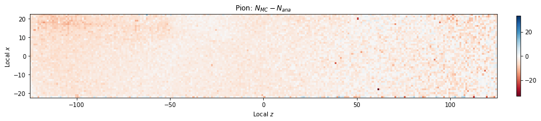
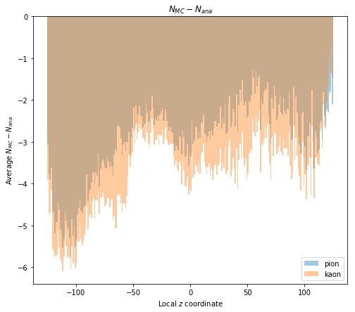
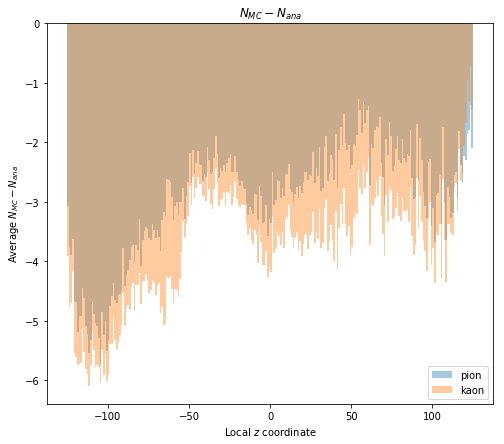
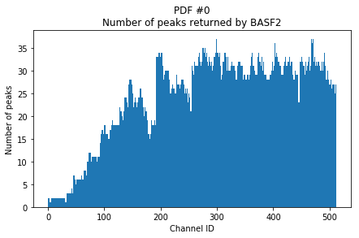
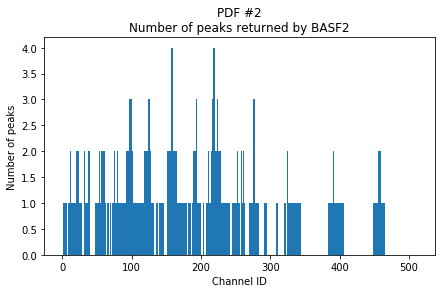
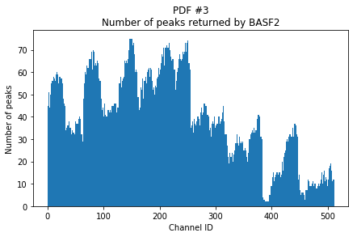
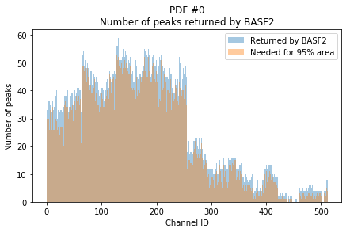
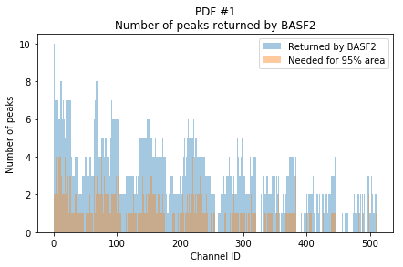
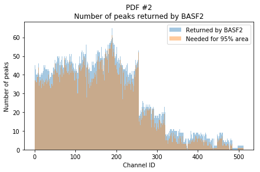

We continued to explore the difference between our Monte Carlo and analytic expected number of digits. Today, I calculated the Monte Carlo numbers of digits with a tolerance of 0.01 radians on the Cherenkov angle.
 

With a 0.01 radian cut, we now expect fewer photon detections than the analytic model predicts, so perhaps a slightly less tight tolerance will be better. Interestingly, though, the pattern in the distribution as a function of z seems to match the pattern from the distribution with a 0.02 radian tolerance. It seems, then, that even with a perfect tolerance, we will underestimate (compared to the analytic model) in certain areas and overestimate in others.
Continued my work on extracting the analytic PDFs. I updated generateTOPLikelihoodTrainingSamples.py to take an additional command-line argument --npeaks where it writes out the number of peaks specified. With 10 peaks per channel PDF, we find distributions like this.
It appears that fewer "zig zags" are cut off. Toward the right, there are clearly more than five peaks shown in a channel. This begs the question, though, of how many peaks are there? To investigate, I updated the script again to write out the total number of peaks that BASF2 is calculating per channel. Here is that distribution.
  While some of the PDFs appear to have very few peaks, most of them are reporting 30 or more for many channels. As such, we calculate how many peaks we need to keep to preserve 95% of the total area of all the peaks. The hope is that many peaks contribute very little to the total area and could be cut with little loss in the PDF. Here are plots of those distributions.
  Because we typically need the majority of the reported peaks to preserve 95% of the total PDF area, it doesn't appear that we can easily cut a very large number of peaks without sacrificing accuracy. Jan has suggested, then, that we write out the top 30 peaks and see if this improves our distributions.